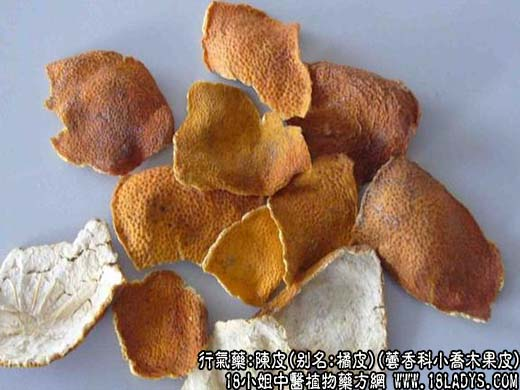

【中药概述】
陈皮，别名：橘皮、贵老、黄橘皮、红皮、橘子皮、广橘皮，为芸香科小乔木福建或朱橘等多种橘皮的果皮。辛、苦，温。归脾、肺经。
1．消胀止呕：用于脾胃气滞，脘腹胀满、疼痛或食少吐泻等，如（<小儿药证直诀>异功散）。
2．祛痰止嗽：用于痰湿壅滞之咳嗽痰多、胸膈满闷等，如（<和剂局方>二陈汤）；偏虚者用（六君子汤）。
3．用于痰湿阻滞，胃气不降之呃逆、呕吐等，如（橘皮汤）、（<金匮要略>橘皮竹茹汤）。
【药效鉴别】
《本草备要》中有陈皮“辛能散，苦能燥能泻，温能补能和，同补药则补，同泻药则泻，同升药则升，同降药则降，为脾肺气分之药，调中快膈，导滞消痰，宣通五脏”的记载。
“陈皮专理气，留白补胃中。”
【应用与配伍】
1．用于脾胃气滞证。本品辛行温通，有行气止痛、健脾和中之功。又因味苦燥湿，故寒湿阻中的脾胃气滞，脘腹胀痛、恶心呕吐、泄泻者，用之尤为适宜，常与苍术、厚朴等同用，如平胃散。治脾虚气滞，腹痛喜按、不思饮食、食后腹胀、便溏舌淡者，可与党参、白术、茯苓等同用，如异功散。若脾胃气滞较甚，脘腹胀痛较剧者，每与木香、枳实等同用，以增强行气止痛之功。
2．用于湿痰，寒痰咳嗽。既能燥湿化痰，叉能温化寒痰，且辛行苦泄而能宣肺止咳，为治痰之要药。治湿痰咳嗽，多与半夏、茯苓等同用，如二陈汤。治寒痰咳嗽，多与干姜、细羊、五味子等同用。
【药理作用】
1．对消化系统的影响：陈皮所含挥发油，对胃肠道有温和的刺激作用，可促进消化液的分泌，排除肠管内积气，显示了芳香健胃和驱风下气的效用。陈皮煎剂对离体兔肠可降低其紧张性，对阿托品引起的肠管紧张性下降，陈皮可进一步使之舒张。对结扎大鼠幽门形成的实验性胃溃疡，皮下注射甲基橙皮甙，可明显抑制溃疡的发生与发展，并能抑制胃液分泌。
2．对心血管系统的作用：
①对心脏的影响：陈皮煎剂、醇提取物及橙皮甙均能兴奋离体及在位蛙心，使收缩力增强，对心率影响不大，但剂量过大反而出现抑制。离体兔灌注陈皮煎剂扩张冠脉。
②对血管与血压的影响：麻醉犬或兔静注市售陈皮或柑皮煎剂或醇提物，可使血压迅速升高，反复给药，不发生快速耐受性。但较大剂量煎剂给犬灌胃，却无升高血压作用。
3．对呼吸系统的作用：
①祛痰作用：陈皮所含挥发油有刺激性祛痰作用，使痰液易咯出，发挥此作用的主要成分为柠檬烯和蒎烯。
②平喘作用：鲜陈皮煎剂对家兔支气管有较好的扩张作用。
另外，本品尚有免疫调节、抗炎等作用。
【化学成分】
含右旋柠檬烯等挥发油，并含橙皮甙、柑橘素、川皮酮、肌醇及维生素B、C等。
【用量用法】
3——10g，水煎服，或入剂。
【使用注意】
气虚证、阴虚燥咳、吐血证及舌赤少津、内有实热者慎服。
1．《医学启源》：“《主治秘要》云：其多及独用则损人。”
2．《本草经疏》：“中气虚、气不归原者，忌与耗气药同用；胃虚有火呕吐，不宜与温热香燥药同用；阴虚咳嗽生痰，不宜与半夏、南星等同用；疟非寒甚者，亦勿施。”
3．《本草汇言》：“亡液之证，不可用，因其辛以散之也；自汗之证，不可用，因其辛不能敛也；元虚之人，不可用，因其辛不能守也；吐血之证，不可用，因其辛散微燥，恐有错经妄行也。”
4．《本草崇原》：“阳气外浮者，宜禁用之。”
5．《本草从新》：“无滞勿用。”
6．《得配本草》：“庸疹灌浆时禁用。”
【注】
本品原名“橘皮”，药用以陈年者辛辣之气稍和为佳故曰陈皮。属六陈药之一。
广柑皮（橙皮）为同属植物茶枝柑的果实。广柑皮不是广陈皮，不宜作陈皮入药。
【附】
橘叶（为芸香科小乔木植物橘的叶）。辛、苦，平。归肝经。疏肝行气，消肿散结。用于胁肋作用痛、乳痈、乳房结块及症瘕等证。本品8～15g，水煎服。或代茶饮。
【药效鉴别】
橘叶舒肝气滞，消痞散结，多用于肝气郁结的胁痛，可配柴胡，郁金等；乳房结块，可配栝蒌，青皮等。